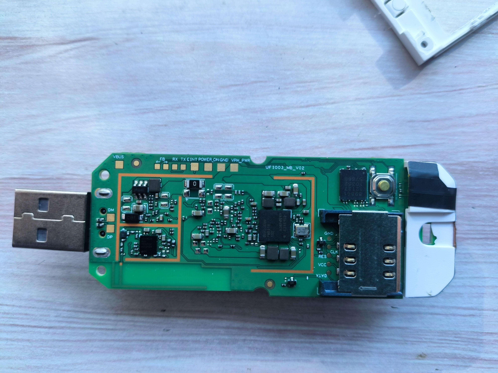
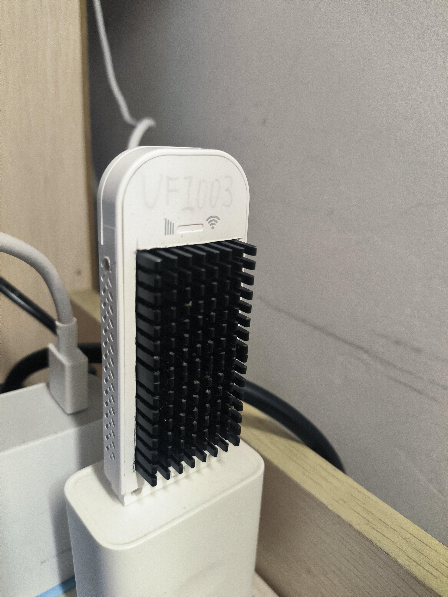
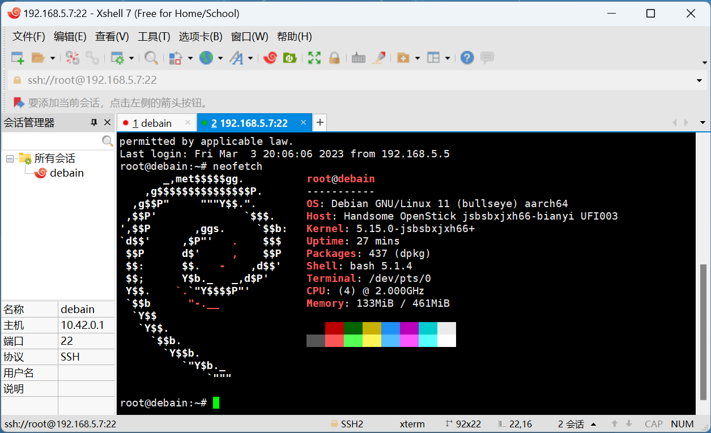

我的Debain设备与Linux
我的Debain设备
设备介绍
这个东西其实就是随身wifi，但他的硬件很有趣，所以被开发出来了许多玩法


为什么要用这个设备学习linux
因为这个学期有linux的课程，所以我就把这个东西拿来学习linux，因为这个东西的硬件比较好，所以我就把他当作我的开发板来学习linux
开始上linux课的时候，要求我们用虚拟机来学习，但是我觉得这样不太好
- 一是因为我的电脑是游戏本，很厚重，上课带来带去很麻烦
- 二是目前学习linux并不需要很高的性能，这个设备已经有足够的性能来学习linux了
为什么不用安卓手机呢
众所周知安卓手机也使用了linux内核
- 安卓手机通常无法获取root权限，这样就无法学习linux内核，即使手机支持root，也需要折腾很久，我不想在主力机上root，因为我的数据都在里面
- 安卓的Linux内核经过了修改，所以学习起来会比较麻烦
学习Linux

其实linux只是个操作系统而已，只是其Gui界面较少，操作通常使用命令行，所以学习linux并不难，只要学会一些基本的命令就可以了
基本命令
ls:列出当前目录下的文件
1 | ls -l:列出详细信息 |
cd:切换目录
1 | cd ..:返回上一级目录 |
pwd:显示当前目录
1 | pwd -P:显示真实路径 |
mkdir:创建目录
1 | mkdir -p:创建多级目录 |
rm:删除文件
1 | rm -r:删除目录 |
rmdir:删除目录
1 | rmdir -p:删除多级目录 |
cp:复制文件
1 | cp -r:复制目录 |
mv:移动文件
1 | mv -f:强制移动 |
cat:显示文件内容
1 | cat -n:显示行号 |
touch:创建文件
1 | touch -a:修改文件的访问时间 |
echo:输出内容到文件
1 | echo "hello world" > hello.txt:输出内容到文件 |
find:查找文件
1 | find . -name "hello.txt":查找当前目录下的hello.txt文件 |
grep:查找文件内容
1 | grep "hello" hello.txt:查找hello.txt文件中的hello |
wc:统计文件内容
1 | wc -l hello.txt:统计hello.txt文件的行数 |
sort:排序文件内容
1 | sort hello.txt:对hello.txt文件进行排序 |
uniq:去重文件内容
1 | uniq hello.txt:去重hello.txt文件 |
head:显示文件头部内容
1 | head -n 10 hello.txt:显示hello.txt文件的前10行 |
tail:显示文件尾部内容
1 | tail -n 10 hello.txt:显示hello.txt文件的后10行 |
diff:比较文件内容
1 | diff example1.txt example2.txt 比较文件差异 |
vim
vim是linux下的文本编辑器，其操作方式与windows下的记事本类似，但是vim的功能更加强大，所以学习vim是学习linux的必备技能
vim的操作方式有两种，一种是命令模式，一种是编辑模式，命令模式下可以进行一些操作，比如复制粘贴，编辑模式下可以进行编辑。vim有多个模式，分别是
正常模式(normal mode),默认模式,可以进行复制粘贴等操作
插入模式(insert mode),可以进行编辑
命令行模式(command mode),可以执行一些命令
可视模式(visual mode),可以进行选择
新建保存和退出
新建文件
1 | vim hello.txt |
保存文件
1 | :w |
退出文件
1 | :q |
强制退出文件
1 | :q! |
保存并退出文件
1 | :wq |
进入编辑模式
1 | i |
退出编辑模式
1 | esc |
初步导航和编辑
通常vim移动光标的方式是使用方向键，但是vim也提供了一些快捷键，可以使用快捷键来移动光标
h:左移
j:下移
k:上移
l:右移
i:插入，插入到当前光标的前面
shift+a或A:追加，追加到当前光标的后面
新建一行
1 | o 新建下一行或者 |
进阶导航和编辑
行号
1 | :set nu |
移动到最后
1 | shift+g |
移动到顶部
1 | gg |
相对行号
1 | :set rnu |
复制粘贴
1 | yy 复制一行 |
删除一行
1 | dd |
重复上一次操作
1 | . |
撤销
1 | u |
返回上一次操作
1 | ctrl+r |
删除一个单词
1 | dw |
改变一个单词
1 | cw |
按单词移动
1 | w 向后移动一个单词 |
跳到单词最后
1 | e |
跳到单词最前
1 | 0 |
搜索替换和视觉模式
搜索
1 | /word |
替换
1 | :%s/old/new/g 最后的g是全局的意思 |
复制一个单词
1 | yw |
粘贴3次
1 | 3p |
删除大括号内的内容
1 | ci{ |
视觉模式
1 | ctrl+v |
其他的快捷键
:set nu:显示行号
:set nonu:不显示行号
:set ai:自动缩进
:set noai:不自动缩进
:set si:智能缩进
:set nosi:不智能缩进
:set ts=4:设置缩进为4个空格
:set ts=8:设置缩进为8个空格
:set ts=tab:设置缩进为tab
参考：